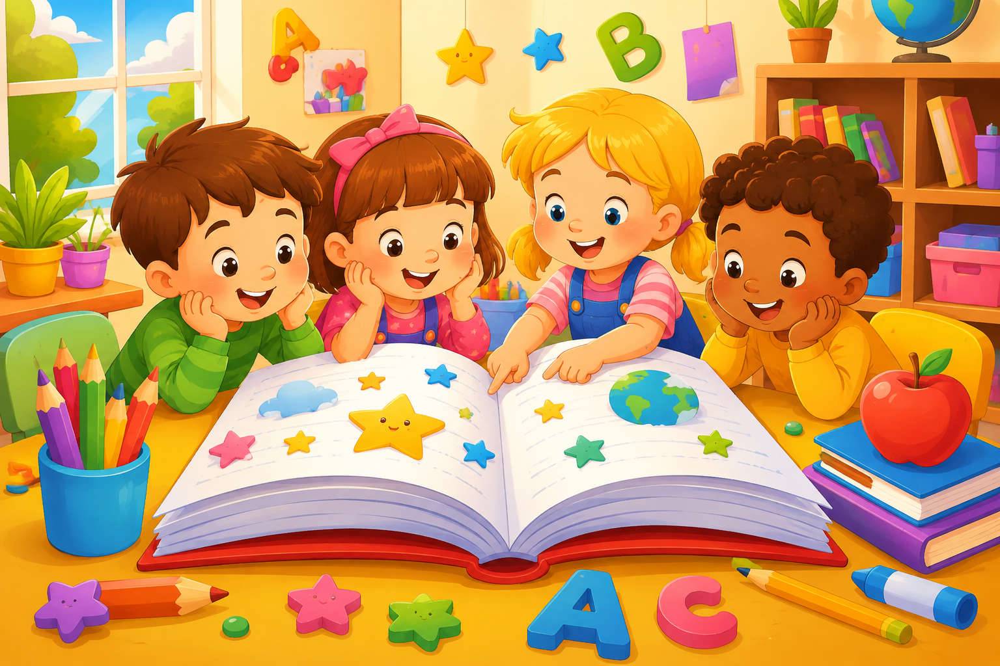
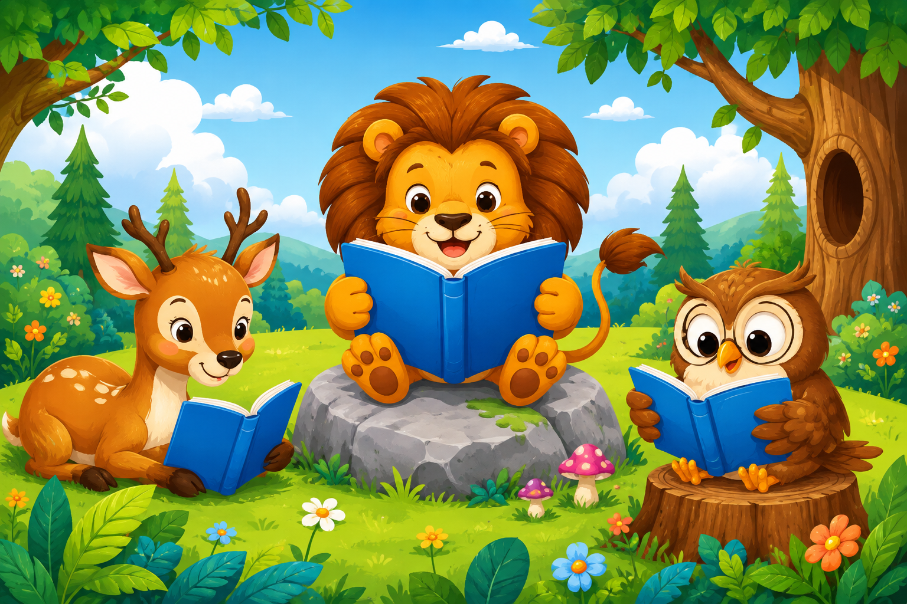
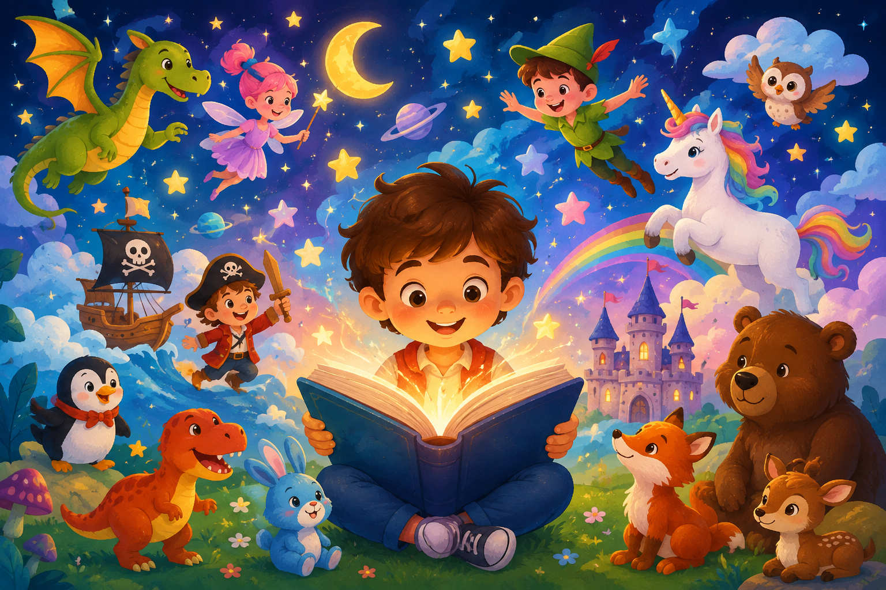
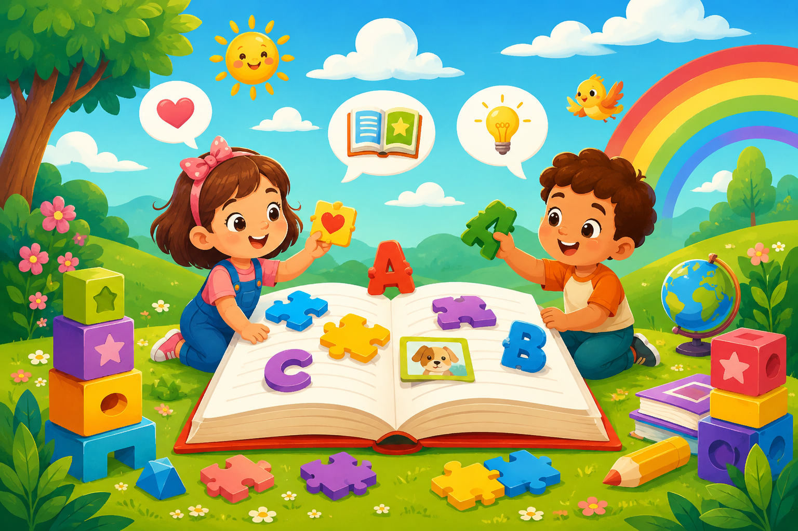
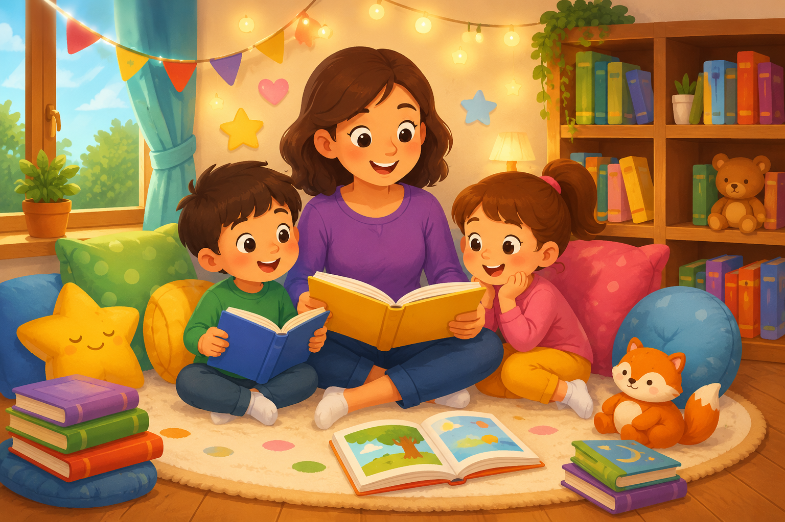
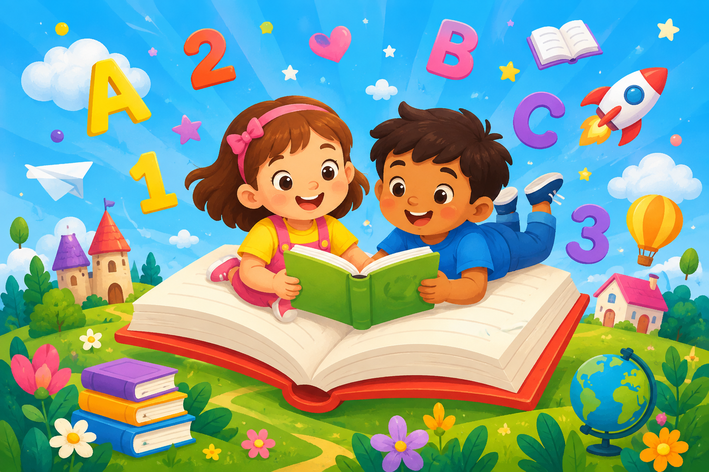

eBooks
eBooks
Libros electrónicosGratis
Project Gutenberg en español
Obras de dominio público para leer en línea o descargar en formatos como EPUB y Kindle.
Explorar colección
Explora libros electrónicos, audiolibros, cuentos ilustrados y juegos de lectura gratuitos para adultos, niños y familias.
Encuentra recursos de acceso público para leer, escuchar, aprender y disfrutar desde cualquier dispositivo.

Literatura, patrimonio, libros electrónicos y audiolibros disponibles gratuitamente en proyectos de amplia trayectoria.
eBooks
Obras de dominio público para leer en línea o descargar en formatos como EPUB y Kindle.
Explorar colección Literatura
Literatura
Fondo bibliográfico en español con literatura, historia, investigación y colecciones de autores.
Visitar biblioteca Audio
Audio
Audiolibros de dominio público narrados por voluntarios, disponibles para escuchar o descargar.
Escuchar audiolibros Colombia
Colombia
Libros, revistas, música, audiolibros, mapas y otros contenidos digitales de consulta gratuita.
Explorar contenidos Patrimonio
Patrimonio
Colección digital de la Biblioteca Nacional de Colombia con publicaciones para consulta y descarga.
Abrir colección Textos libres
Textos libres
Biblioteca colaborativa de textos originales de dominio público o publicados con licencias libres.
Consultar textosCuentos ilustrados, libros por niveles, audiocuentos y juegos para practicar lectura, vocabulario y comprensión.

Historias infantiles ilustradas y multilingües para leer, adaptar, traducir o descargar.
Descubrir cuentos
Libros infantiles gratuitos organizados por idioma y nivel de lectura.
Abrir biblioteca
Cuentos, audiocuentos, comprensión lectora y juegos educativos para primaria y preescolar.
Aprender jugando
Juegos para asociar palabras e imágenes, ordenar letras y practicar vocabulario.
Jugar y aprender
Portal con cuentos, autores, revistas, videoteca y fonoteca de literatura infantil y juvenil.
Explorar portal
Material digital colombiano para compartir lecturas y contenidos culturales en familia.
Explorar recursosPrueba con palabras como “cuento”, “audiolibro”, “juego”, “Colombia” o “clásicos”.
Los enlaces dirigen a bibliotecas, instituciones culturales y proyectos educativos de amplia trayectoria. Antes de reutilizar o republicar una obra, revisa siempre su ficha, licencia y condiciones de uso.